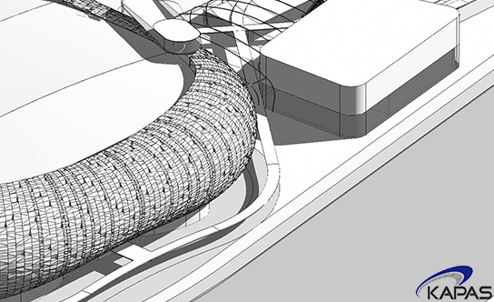
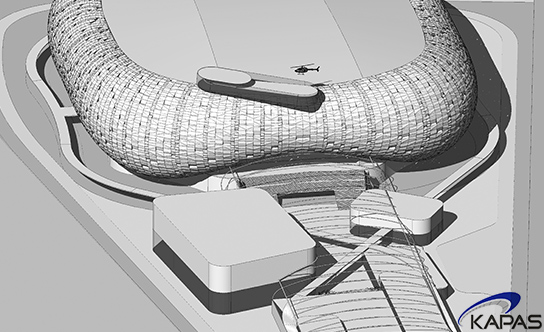
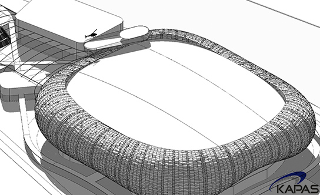

KAPAS
- 
- 
- 
- Company Name
- Korea Arena Performing Arts and Sports (KAPAS) Co., Ltd
- Chief Executive Officer
- Steve Kang
KAPAS is a leading arena service provider located in Seoul, Korea. KAPAS introduced the concept of an arena development in Korea to the Korean Ministry of Sports, Culture and Tourism and was awarded the exclusive mandate to undertake an extensive feasibility study on the development of a world-class arena in Seoul. The feasibility study was conducted from July 2012 through Dec 31 2012.
KAPAS seeks to aid in the global expansion and growth of Korean culture and live entertainment, by aiding in the successful development and operations of a landmark arena in Korea, as well as improving existing entertainment facilities.
The KAPAS team comprises of professionals with diverse backgrounds, including real estate development, asset and property management, entertainment and media.
KAPAS offers a full range of services related to arena development and operations. Please refer to the What We Offer page or contact the team for additional information.